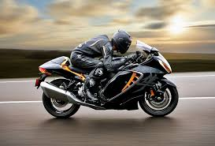

Suzuki Hayabusa

he Suzuki GSX1300R Hayabusa is a sports motorcycle made by Suzuki since 1999. It immediately won acclaim as the world's fastest production motorcycle, with a top speed of 303 to 312 km/h (188 to 194 mph).In 1999, fears of a European regulatory backlash or import ban[6][7][8][9] led to an informal agreement between the Japanese and European manufacturers to govern the top speed of their motorcycles at an arbitrary limit starting in late 2000.[10] The media-reported value for the speed agreement in miles per hour was consistently 186 mph, while in kilometers per hour it varied from 299 to 303 km/h, which is typical given unit conversion rounding errors. This figure may also be affected by a number of external factors, as can the power and torque values.
ENGINE
 A motorcycle engine is an engine that powers a motorcycle. Motorcycle engines are typically two-stroke or four-stroke internal combustion engines, but other engine types, such as Wankels and electric motors, have been used.Although some mopeds, such as the VéloSoleX, had friction drive to the front tire, a motorcycle engine normally drives the rear wheel, power being sent to the driven wheel by belt, chain or shaft. Historically, some 2,000 units of the Megola were produced between 1921 and 1925 with front wheel drive,[1] and the modern Rokon, an all terrain motorcycle with both wheels driven, has been produced since 1960.[2]
A motorcycle engine is an engine that powers a motorcycle. Motorcycle engines are typically two-stroke or four-stroke internal combustion engines, but other engine types, such as Wankels and electric motors, have been used.Although some mopeds, such as the VéloSoleX, had friction drive to the front tire, a motorcycle engine normally drives the rear wheel, power being sent to the driven wheel by belt, chain or shaft. Historically, some 2,000 units of the Megola were produced between 1921 and 1925 with front wheel drive,[1] and the modern Rokon, an all terrain motorcycle with both wheels driven, has been produced since 1960.[2]
TOP SPEED
 With rumors and then pre-release announcements of much greater power in Kawasaki's Ninja ZX-12R in 2000, clearly attempting to unseat Suzuki and regain lucrative bragging rights, the speed war appeared to be escalating. There were growing fears of carnage and mayhem from motorcycles getting outrageously faster every year, and there was talk of regulating hyper sport motorcycles, or banning their import to Europe.The response was a so-called gentlemen's agreement between the Japanese and European manufacturers to electronically limit the speed of their motorcycles to 300 km/h (186 mph).[4][35] The informal agreement went fully into effect for the 2001 model year.[2][3] So for 2001[2][3] models, and those since, the question of which bike was fastest could only be answered by tampering with the speed limiting system, meaning that it was no longer a contest between stock, production motorcycles, absolving the manufacturer of blame and letting those not quite as fast avoid losing face.[13] Both Kawasaki and Suzuki would claim, at least technically, to have the world's fastest production motorcycle.
With rumors and then pre-release announcements of much greater power in Kawasaki's Ninja ZX-12R in 2000, clearly attempting to unseat Suzuki and regain lucrative bragging rights, the speed war appeared to be escalating. There were growing fears of carnage and mayhem from motorcycles getting outrageously faster every year, and there was talk of regulating hyper sport motorcycles, or banning their import to Europe.The response was a so-called gentlemen's agreement between the Japanese and European manufacturers to electronically limit the speed of their motorcycles to 300 km/h (186 mph).[4][35] The informal agreement went fully into effect for the 2001 model year.[2][3] So for 2001[2][3] models, and those since, the question of which bike was fastest could only be answered by tampering with the speed limiting system, meaning that it was no longer a contest between stock, production motorcycles, absolving the manufacturer of blame and letting those not quite as fast avoid losing face.[13] Both Kawasaki and Suzuki would claim, at least technically, to have the world's fastest production motorcycle.
BRAKES
 A brake is a mechanical device that inhibits motion by absorbing energy from a moving system.[1] It is used for slowing or stopping a moving vehicle, wheel, axle, or to prevent its motion, most often accomplished by means of friction.Most brakes commonly use friction between two surfaces pressed together to convert the kinetic energy of the moving object into heat, though other methods of energy conversion may be employed. For example, regenerative braking converts much of the energy to electrical energy, which may be stored for later use. Other methods convert kinetic energy into potential energy in such stored forms as pressurized air or pressurized oil. Eddy current brakes use magnetic fields to convert kinetic energy into electric current in the brake disc, fin, or rail, which is converted into heat. Still other braking methods even transform kinetic energy into different forms, for example by transferring the energy to a rotating flywheel.Brakes are generally applied to rotating axles or wheels, but may also take other forms such as the surface of a moving fluid (flaps deployed into water or air). Some vehicles use a combination of braking mechanisms, such as drag racing cars with both wheel brakes and a parachute, or airplanes with both wheel brakes and drag flaps raised into the air during landing.
A brake is a mechanical device that inhibits motion by absorbing energy from a moving system.[1] It is used for slowing or stopping a moving vehicle, wheel, axle, or to prevent its motion, most often accomplished by means of friction.Most brakes commonly use friction between two surfaces pressed together to convert the kinetic energy of the moving object into heat, though other methods of energy conversion may be employed. For example, regenerative braking converts much of the energy to electrical energy, which may be stored for later use. Other methods convert kinetic energy into potential energy in such stored forms as pressurized air or pressurized oil. Eddy current brakes use magnetic fields to convert kinetic energy into electric current in the brake disc, fin, or rail, which is converted into heat. Still other braking methods even transform kinetic energy into different forms, for example by transferring the energy to a rotating flywheel.Brakes are generally applied to rotating axles or wheels, but may also take other forms such as the surface of a moving fluid (flaps deployed into water or air). Some vehicles use a combination of braking mechanisms, such as drag racing cars with both wheel brakes and a parachute, or airplanes with both wheel brakes and drag flaps raised into the air during landing.